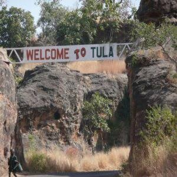
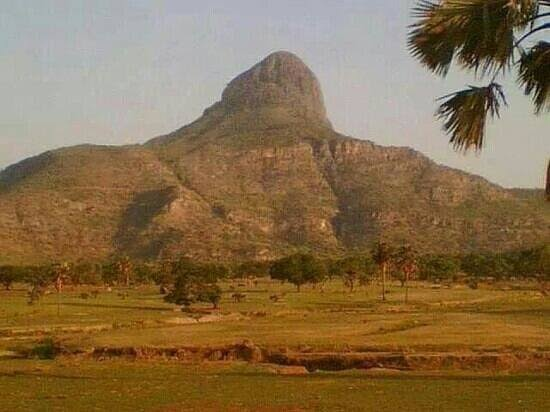

Introduction
Gombe State, located in northeastern Nigeria, is known as the "Jewel in the Savannah." Established in 1996, Gombe is one of the newer states in Nigeria, yet it has rapidly developed into a vital part of the country. The state capital, also named Gombe, is a growing city that serves as the administrative and economic center of the state.
Geography and Climate
Gombe State is bordered by Borno, Yobe, Adamawa, Taraba, and Bauchi States. The state's terrain is characterized by savannah vegetation and undulating hills. The climate is predominantly tropical, with a rainy season from May to October and a dry season from November to April. The state enjoys a moderate climate, with temperatures ranging from 25°C to 35°C throughout the year.
Culture and People
Gombe State is home to a diverse population, including ethnic groups such as the Fulani, Tangale, Waja, and Tera. The state is known for its rich cultural heritage, which is reflected in its traditional festivals, dances, and crafts. The Tangale people, for example, are known for their vibrant traditional dances and colorful attires, while the Fulani are renowned for their pastoral lifestyle and intricate embroidery.
Economic Activities
Agriculture is the mainstay of Gombe State's economy, with crops like maize, millet, sorghum, and groundnuts being widely cultivated. The state is also involved in livestock farming, particularly cattle, sheep, and goats. In recent years, Gombe has been exploring its potential in the mining sector, with deposits of limestone, gypsum, and coal. The state is also investing in infrastructure development to boost its economic growth.
Tourist Attractions
Gombe State offers several tourist attractions that reflect its natural beauty and cultural richness. The Tula Highlands, located in the southern part of the state, offer breathtaking views and opportunities for hiking and exploration. The Kilang Hill is another popular destination for adventure seekers. For those interested in history, the Emir's Palace in Gombe city provides insights into the traditional leadership and culture of the region. The state is also home to several traditional festivals, such as the Tangale Festival and the Tera Cultural Festival, which attract visitors from across Nigeria.
Education and Innovation
Gombe State is committed to improving education and innovation, with several institutions dedicated to higher learning. The Gombe State University and the Federal College of Education (Technical) Gombe are key institutions that contribute to the state's educational development. The state government is also focused on improving primary and secondary education to ensure that the youth are well-prepared for the future.
Tula
Tula is a historic town located in Gombe State, known for its rich cultural heritage and the scenic beauty of the Tula Plateau. The town is home to the Tula people, one of the indigenous groups in Gombe. Visitors to Tula can explore ancient caves and settlements, including remnants of traditional defensive structures used to protect the community from invaders. Tula also offers panoramic views of the surrounding landscape, making it a popular spot for hikers and history enthusiasts. Its deep-rooted traditions, fascinating history, and cultural significance make Tula a must-visit destination for those looking to experience the rich tapestry of Gombe’s past.
Kilang Hill
Kilang Hill, located in Gombe State, is a striking natural formation that offers breathtaking views of the surrounding valleys and plains. It is a popular destination for hikers and adventure seekers, with its challenging trails and steep slopes. At the summit, visitors are rewarded with sweeping vistas of the entire Gombe region, providing a perfect spot for photography and nature appreciation. Kilang Hill holds cultural significance for the local communities and serves as a place of reverence. Its combination of natural beauty and cultural importance makes it a favorite attraction for both locals and tourists looking to explore Gombe's landscapes.
Conclusion
Gombe State is a hidden gem in Nigeria's northeastern region, offering a unique blend of natural beauty, cultural diversity, and economic potential. Whether you're interested in exploring its landscapes, experiencing its vibrant culture, or engaging in business opportunities, Gombe State is a destination worth visiting.